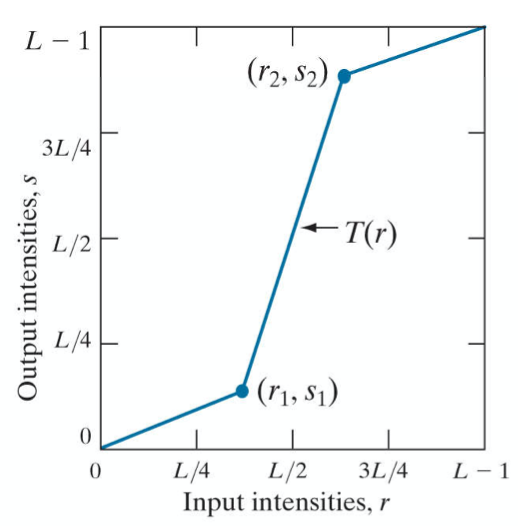

空间域的图像增强
背景知识
什么是图像增强？
图像增强是要突出图像中的某些信息，同时削弱或去除某些不需要信息的一种处理方法，以得到对具体应用 来说视觉效果更“好”，或更“有用”的图像的技术。
为什么要图像增强？
图像在传输或者处理过程中会引入噪声或使图像变模糊，从而降低了图像质量，甚至淹没了特征，给分析带来 了困难。
图像增强的目的：
(1)改善图像的视觉效果，提高图像的清晰度;
(2)将图像转换成更适合于人眼观察和机器分析识别的形式，以便从图像中获取更有用的信息。
基本方法
、
基本灰度变换
对数变换
$s = c\ log(1+r)$，$c$为常数，
作用：用来扩展被压缩的高值图像中的暗像素。
缺点：很大程度上压缩了图像像素的动态范围。
一般应用：压缩傅立叶变换的动态范围等。
幂次变换
$s=c\ r^{\gamma}$，$c$为常数。
作用：$\gamma<1$时，把低亮度进行拉伸（因为原图片需要的细节大多在暗处，需要仔细分辨）；$\gamma>1$时，把高亮度进行拉伸（因为原图片需要的细节大多在亮处，需要把亮处拉长范围观察）；
伽马校正：几乎所有的CRT显示设备、摄像胶片、许多电子照相机的 光电转换特性都是非线 性的。所以，如果不进行校正处理的话 ，将无法得到好的图像效果。
图像反转
$s=L-1-r$，$L$为亮度级（灰度级）
作用：适于处理增强嵌入于图像暗色区域的白色或灰色细节,特别是当黑色面积占主导地位时。
分段线性变换
其形式可以任意组合，有些重要的变换可以应 用分段线性函数描述。
（1）对比拉伸：扩展图像处理时某范围灰度级的动态范围，如图，可以选择性的拉伸$[r_1,r_2]$范围的动态范围到$[s_1,s_2]$范围
（2）突出图像中特定灰度范围的亮度，可以增强某些特征；
突出目标轮廓，消除背景细节：

突出目标轮廓，保留背景细节：
（3）比特平面分割:把数字图像分解成为位平面，高阶位如前4位包含视觉上很重要的大多数数据;其它位对图像中 的更多微小细节有作用。

该图为比特面分层的实例：
直方图处理
灰度直方图：灰度级的函数，描述的是图像中具有该灰度级的像素的个数。
横轴表示灰度级，纵轴表示每一灰度级具有的像素数或该像素数占总像素数的比例值，做出的条形统计图即为灰度直方图。
直方图意义：
反应图像的灰度分布情况
- 低端分布的直方图，图象较暗
- 高端分布的直方图，图象太亮
- 直方图分布狭窄，图象对比度不够
- 直方图的多个峰值，一般对应多类目标
指出图象增强处理的方向
直方图的均衡化
均匀分布的直方图，扩大动态范围，增大图象对比度
直方图的规定化
符合特定分布的直方图，有目的地增强感兴趣目标
应用于图像增强技术，图像压缩及分割。
一般会对直方图进行归一化操作。
直方图均衡化：
中心思想：是把原始图像的灰度直方图从比较集中的某个灰度区 间变成在全部灰度范围内的均匀分布。是对图像的非线性拉伸。
• 变换原始图像的直方图为均匀分布
==> 增大动态范围
• 使像素灰度值的动态范围最大
==> 增强图像整体对比度(反差)
- 优点：对于背景和前景都太亮或者太暗的图像非常有用；如X光图像的骨骼结构显示、以及曝光过度或者曝光不足照片中更好的细节。
- 缺点：对处理的数据不加选择，可能会降低有用信号的对比度; 变换后图像的灰度级减少，某些细节消失; 某些图像，如直方图有高峰，经处理后对比度不自然的过分增强。
直方图规定化：
目的：将原始图象的直方图转换为期望的直方图的形状
算法思想:
– 设:$\{r_k\}$是原图象的灰度级,
• $\{z_k\}$是符合指定直方图结果图象的灰度级
– 目标:找到一个灰度级变换函数$T$,使:
(1)$z_k=T(r_k)$ $r\to z$
(2)从概率密度函数(直方图)入手
直方图规定化vs. 直方图均衡化
直方图均衡化: 自动增强
• 效果不易控制
• 总得到全图增强的结果
直方图规定化: 有选择地增强
• 须给定需要的直方图
• 可特定增强的结果
空间滤波基础
空间滤波器的通用实现方法———邻域加权运算（掩模运算）
空间滤波计算公式（掩模计算公式）：
在空间借助模版进行滤波操作有两个分类标准：
- 线性/非线性
- 平滑/锐化
平滑滤波器
原理：
- 减弱或消除高频分量，保留低频分量
- 平滑处理往往用于图像分割之前，因为它可以去除噪声也可以填补图像边缘中的间隙，有利于从图像中找出目标。
算法设计：
- 平滑的主要目标是去除噪声
- 平滑的附加要求是保护图像信息的细节
均值滤波器： 加权均值滤波器：
模板尺寸越大，图像越模糊，图像细节丢失越多。
平滑处理的应用:在提取大目标前，去除图像中一些琐碎的细节，“有所失才能 有所得”。
高斯滤波器(Gaussian Filters):
– 采用高斯函数作为加权函数。$G(x,y)=e^{-\frac{x^2+y^2}{2\sigma^2}}=e^{-\frac{r^2}{2\sigma^2}}$
– 原因一:二维高斯函数具有旋转对称性，保证滤波时各方向平滑 程度相同;
– 原因二:离中心点越远权值越小。确保边缘细节不被模糊。
设计高斯滤波器的方法：
- 设定$\sigma^2$和$n$的值
- 整数画和归一化
平滑滤波的边缘保持：
带门限的邻域平均：
思想：有噪声就进行滤波平均，没有噪声则不进行处理
半邻域平均
思想：判断邻域中有无边缘，没有边缘，可以不担心细节信息被平滑，被处理像素灰度采用全邻域均值；否则，根据邻域中的目 标信息为被处理像素赋值。
如何判断边缘是否存在（边缘检测）：
–邻域中8个邻点像素分为2组，灰度值小的3个A组，其他B组
–两组之间灰度差别大，认为有边缘，否则无边缘
算法：
–对P点的邻点$A_i$灰度排序，分为A、B两组
–计算A组均值$M_3$，B组加P点均值$M_6$和全邻域均值$N$
–根据预设门限$T$，被处理像素的新灰度为$g(m,n)=\left\{\begin{matrix}
N,&\left |M_6-M_3\right | \leqslant T\\
M_6,& \left |M_6-M_3\right | > T
\end{matrix}\right.$
统计排序滤波器：
非线性空间滤波器，其响应是基于图像滤波器所包围区域中像素(灰度)的排序，用排序结果的值代替中心像素的值。
常见的如中值滤波器，该滤波器对脉冲噪声特有效。
锐化滤波器
原理：
- 减弱或消除低频分量，保留高频分量， 又称高通滤波器
目的：
- 突出图像中细节或被模糊的细节(灰度过渡部分)， 锐化可用微分来完成，而微分算子的响应强度与图像在该点的突变程度有关。
一阶微分滤波器：Roberts梯度算子，Sobel梯度算子，Prewitt梯度算子等；
拉普拉斯微分算子，二阶微分滤波器：
实现方式：最终图像=通过掩模处理的图像+原图像
掩模在中心处加1，等于最终模版；
Matlab实现
灰度转换
Spatial Filtering————————-空间滤波（neighborhood processing or spatial convolution，领域处理或空间卷积）
fuzzy image processing———模糊图像处理
g(x,y)= T[f(x,y)]，f为输入，g为输出
T是在关于点（x，y）的指定邻域上定义的f上的算子。
Intensity Transformation Functions灰度转换方程
1 | g = imadjust(f, [low_in high_in] , [low_out high_out] , gamma);%幂律（伽马）变换 Using the empty matrix ( [ J ) for [ low_in high_in ] or for [ low_out high_out ] results in the default values [ 0 1 ] . If high_out is less than low_out, the output intensity is reversed. |
contrast-stretching transformation function对比度拉伸方程

E控制斜率，g = 1./(1 + (m./f).^E)
thresholding function阈值方程（对于图像分割很方便）
Specifying Arbitrary Intensity Transformations指定任意强度转换
1 | linspace(x1,x2,N);%从x1开始，x2结束，中间线性插值N个点，返回插值数组（行向量） |
一些对于灰度转换有用方程
1 | a = nargin; |
Histogram Processing and Function Plotting
r~k~是第k级灰度值，n~k~是图像中灰度为r~k~的像素的个数。
通常用乘积MN表示图像像素的个数，M和N分别表示图像的行和列的维数。
归一化后的直方图由
1 | h = imhist(f, b);%b表示讲直方图分成b个部分,b默认256 |
Histogram Equalization直方图均衡化
1 | g = histeq(f, nlev);%nlev为输出图像指定的灰度级数，函数中nlev默认为64 |
直方图匹配（规定化）
1 | g = histeq(f, hspec);%hspec为指定的直方图（一个由指定值构成的行向量） |
空间滤波
工具箱使用imfilter函数来实现线性空间滤波：
1 | %%%%%%%%%%%%%%%%%%%%%%%%%%%% |
非线性滤波器
在非线性滤波处理中，掩模的概念并不流行。滤波器应该看作是一个基于领域像素操作的非线性函数，其函数结果组成了领域中心像素处操作的响应。
工具箱提供两个执行常规非线性滤波的函数nlfilter和函数colfilter.
nlflter函数直接执行二维操作；
colfilter函数以列的形式组织数据；内存占用多，但是速度快，所以常用这个函数。
colfilter函数的计算过程：
$\ast \ \ A$总共有mn行，但列数可根据输入的尺寸变化，尺寸的选择由colfilter自动完成。
语法：
1 | %%%%%%%%%%%%%%%%%%%%%%%%%%%% |
在使用colfilter滤波前，需要对图像进行填充，使用padarray函数进行填充
1 | %%%%%%%%%%%%%%%%%%%%%%%%%%%% |
生成滤波掩模w的函数fspecial为：
1 | w = fspecial( 'type' , parameters)；%针对线性空间滤波器 |
统计排序滤波器
函数ordfilt2
1 | %使用邻域的一组排序元素中的第order个元素来代替f中的每一个元素，而该邻域是由domain中非零元素指定的 |